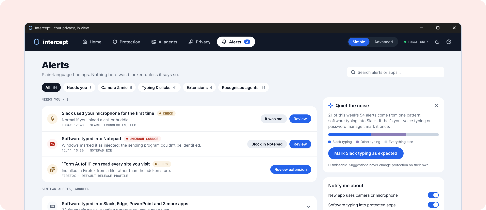

Alerts
Plain-language alerts, grouped and quiet by default.
Each finding says what happened, whether it is usually normal, and what Windows could and could not prove. Repeated patterns collapse into one card with evidence, so one decision handles them all.
Nothing described as blocked unless it was
Every dismissal can be undone
No privacy score

An example alert
Read an alert in five seconds.
Every alert follows the same order: what happened, whether it is normal, the evidence, then the actions. This one comes from the sample data.
Slack used your microphone for the first time
Normal if you joined a call or huddle. Confirm once and Intercept stops asking.
TODAY 12:43 · SLACK TECHNOLOGIES, LLC · SIGNATURE VERIFIED
It was me
Review
Marked expected
Undo
What happened
Plain language first. It names the app that acted and the recipient, never a guessed source.
Is it normal?
One line on when this is expected, so you can decide quickly.
Evidence
When it happened, which publisher, and whether the signature verified, in monospaced detail.
Actions
The safe choice and the review are one click each. Anything risky asks first.
Undo
Marking it expected writes to the local actions ledger. Undo for 10 seconds, then from the ledger.
Grouped, not repeated
Similar alerts become one decision.
When the same thing happens across several apps, Intercept groups it with the recipients and counts, and explains the usual cause.
Similar alerts grouped with their recipients and counts
Recognised agent activity kept in history, never notified
Snooze a group for 24 hours, or mark one app as expected
Software typed into Slack, Edge, PowerPoint and 3 more apps
38 times this week · sending program unknown each time
slack.exe ×21
msedge.exe ×9
powerpnt.exe ×4
notepad.exe ×2
zoom.exe ×1
claude.exe ×1
Repeated typing into chat and office apps is usually voice typing, an on-screen keyboard, PowerToys or a password manager. Marking an app as expected stops notifications but keeps the record.
Review all 38
Mark Slack as expected
Snooze group 24 h
Claude typed in Notepad (6) · Codex clicked in Paint (8)
Signed agents working in apps they were approved for. Kept in history, never notified.
Recognised
Always alerts
Five findings you can’t silence globally.
You can mark a single event as expected for that path and agent. The guardrail itself stays on, for every agent and in every mode.
Reading a decoy credential file
Opening saved sign-ins, Credential Manager or SSH keys
Adding or changing an MCP server, hook or plugin
Typing into a protected app
Turning off or tampering with Intercept’s protection
Safe by default
Easy things stay one click. Dangerous things are always deliberate.
Every action has one of four confirmation levels, and every level writes to a local actions ledger you can review and undo.
Keep reading
See what your PC is really doing.
Free, MIT-licensed and local. Ready in a few minutes.